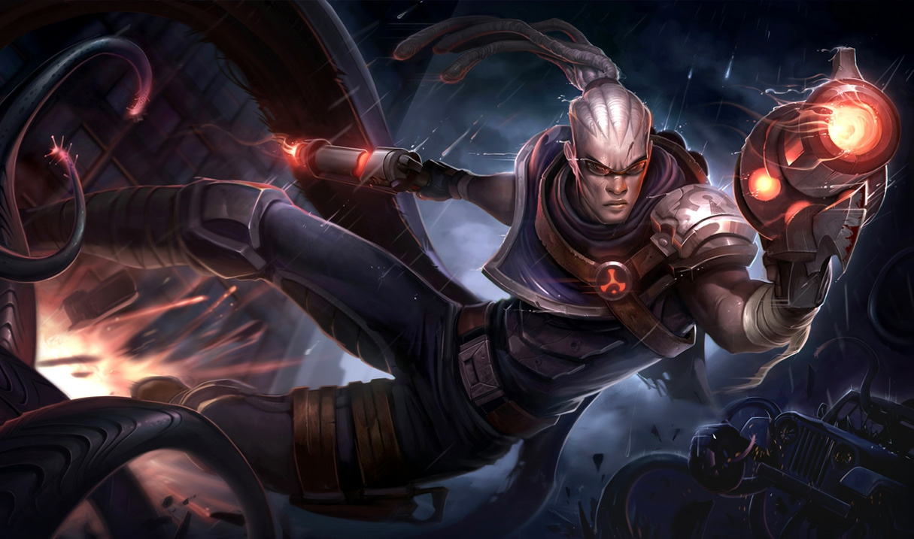
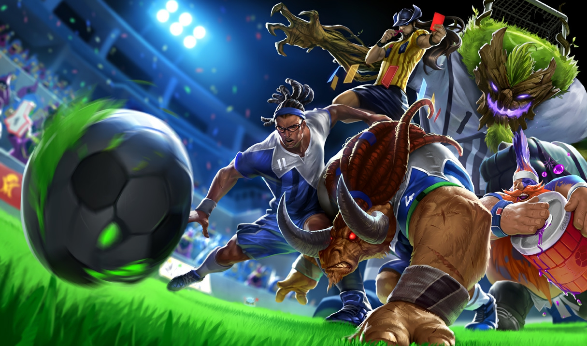
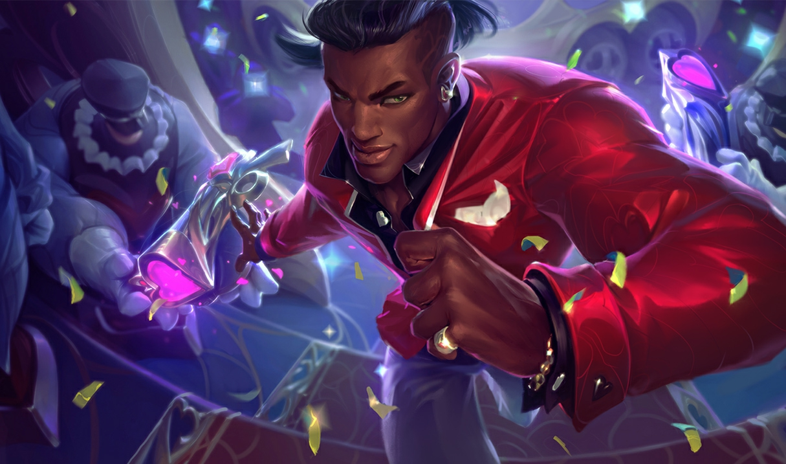
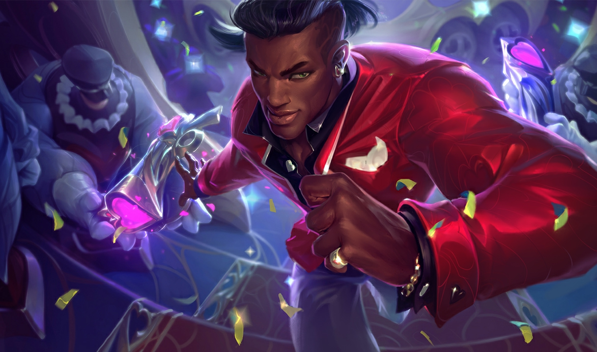

Lucian
El Purificador
Vida: 590 (+90 por nivel)
Daño de ataque: 67 (+4 por nivel)
Velocidad de ataque: 0.625 (+2.25% por nivel)
Velocidad de movimiento: 345
Regeneracion de vida: 5 (+0.8 por nivel)
Armadura: 28 (+3.5 por nivel)
Resistencia Magica: 32.1 (+1.25 por nivel)
Historia
Lucian empuña armas reliquias imbuidas de un poder ancestral y es un guardián incondicional contra los muertos vivientes. Su fría convicción nunca flaquea, incluso frente a los horrores enloquecedores que destruye bajo su lluvia de fuego purificador. Lucian camina solo en una misión sombría: purgar los espíritus de aquellos atrapados en la no muerte, su eterno amor entre ellos.
Al igual que las armas reliquias gemelas que manejaban, Lucian y su esposa Senna fueron tallados en la misma piedra. Juntos lucharon contra el mal en Runaterra durante años, llevando la luz a la oscuridad y purgando a aquellos tomados por la corrupción. Eran faros de rectitud: la dedicación de Senna a su causa nunca vaciló, mientras que la bondad y la calidez de Lucian tocaron los corazones de las muchas vidas que salvaron. Dos partes de un todo, fueron dedicadas e inseparables.
Aunque Lucian y Senna fueron testigos del terror que rompería a la mayoría de los guerreros, nada de lo que habían visto en comparación con los horrores provocados por las Islas de las Sombras. Cuando los habitantes espectrales de ese lugar maldito comenzaron a manifestarse a través de Runaterra, Lucian y Senna los persiguieron dondequiera que aparecieron. Fue un trabajo lúgubre, pero la valiente pareja prevaleció hasta un trágico encuentro con Thresh, el recolector de almas. Lucian y Senna ya se habían enfrentado a esos no-muertos de pesadilla antes, pero nunca a alguien tan astuto y cruel. A medida que se desarrollaba la terrible batalla, Thresh lanzó una estratagema inesperada. Para horror de Lucian, la criatura engañó a Senna y atrapó su alma, atrapándola en una prisión espectral. Nada podría traerla de vuelta. Senna estaba perdida, y por primera vez, Lucian enfrentaba su misión solo.
Aunque el Warden había tomado la mitad del corazón de Lucian, también había creado el enemigo más peligroso de las Shadow Isles. Lucian se convirtió en un hombre de determinación oscura, uno que no se detendría ante nada para purgar a los muertos vivientes de la faz de Runaterra. En honor a la memoria de Senna, él tomó su arma caída y juró ver su misión hasta el final. Ahora blandiendo ambas reliquias, Lucian lucha para matar a los muertos vivientes y limpiar las almas de las Islas de las Sombras. Él sabe que el alma de Senna está perdida, pero nunca pierde la esperanza de que algún día le traiga la paz.
Aspectos
  



Habilidades

Balas Luminosas
Después de usar una de las habilidades de Lucian, su próximo ataque automático en 3 segundos golpeará dos veces. El segundo golpe trata un porcentaje de AD de Lucian en función del nivel, pero aplica plenamente los efectos de golpe. Minions y monstruos reciben daño completo desde el segundo disparo. El segundo golpe puede atacar críticamente con un 75% de daño.
Luz Lacerante
Costo: 50/60/70/80/90 de Maná Alcance: 500 Activo: dispara un rayo de luz penetrante a través de una unidad enemiga, dañando a los enemigos en una línea por daño físico. El tiempo de lanzamiento de Luz Lacerante disminuye ligeramente a medida que Lucían gana niveles.

Resplandor Ardiente
Costo: 50 de Maná Alcance: 900 Activa: dispara un disparo que explota al contacto del enemigo o que llega al final de su trayectoria. La explosión causa daño mágico y marca a los enemigos durante 6 segundos. Cuando Lucian o sus aliados dañan un objetivo marcado, Lucian gana Velocidad de movimiento durante 1 segundo.
Persecución Implacable
Costo: 40/30/20/10/0 de Maná Alcance: 425 Activo: recorre rápidamente una corta distancia. Cuando Balas Luminosas golpea a un enemigo, el tiempo de reutilización de Persecución implacable se reduce en 1 segundo (el doble a 2 segundos contra los campeones).

El Sacrificio
Costo: 100 de Maná Alcance: 1200 Activo: Lucian se mueve libremente mientras dispara rápidamente en una sola dirección durante 3 segundos. Sus disparos chocan con el primer enemigo que tienen y cada uno hace daño físico. El sacrificio hace 400% de daño a los minions. Lucian puede usar Persecución implacable durante El Sacrificio. Activa de nuevo El Sacrificio para cancelar temprano.